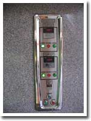
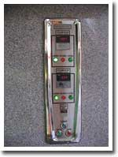

เตาเผาศพ รุ่น พี.เทค2000N
ใช้น้ำมันดีเซลเป็นเชื้อเพลิง
• ควบคุมการทำงานด้วยระบบอิเล็กทรอนิกส์
• ระบบประตูเปิด-ปิดอัตโนมัติด้วยไฟฟ้า
อุณภูมิด้วยตัวเลขดิจิตอลสะดวกปลอดภัยและใช้งานง่าย
วัสดุและโครงสร้าง
• โครงสร้างแข็งแรงด้วยเหล็กหนา 3 มม.
• ติดตั้งด้วยวัสดุทนไฟ มาตรฐานเทียบเท่า
อายุการใช้งาน
• สามารถรองรับการใช้งานมากกว่า 10 ปี
ระบบควบคุมและเชื้อเพลิง
• ใช้น้ำมันดีเซลเป็นเชื้อเพลิง
•อัตราการสิ้นเปลือง 40–50 ลิตรต่อการเผา 1 ศพ
ประสิทธิภาพการเผา
• อัตราการสิ้นเปลือง 40–50 ลิตรต่อการเผา 1 ศพ
• หัวพ่นไฟระบบ 2 Stages มาตรฐานเทียบเท่า
• สามารถให้กำลังความร้อนได้มากกว่า 80–120 KW
• ระยะเวลาในการเผาประมาณ 50–70 นาที
ดีไซน์และการตกแต่ง
• ชุดตกแต่งประกอบด้วยหินแกรนิต สวยงาม ทนทาน และทันสมัย
• จดสิทธิบัตรการออกแบบผลิตภัณฑ์จากกรมทรัพย์สินทางปัญญา
คุณลักษณะเฉพาะ(Specification)
ประเภทและการทำงาน
เป็นเตาเผาศพที่ใช้หลักการทำงานของเตาเผาแบบหลายห้อง ประกอบด้วยห้องเผาที่ 1 ทำหน้าที่เผาศพ โลงศพ และวัสดุอื่น ๆ ส่วนห้องเผาที่ 2 ทำหน้าที่เผาก๊าซที่เกิดจากห้องเผาที่
1 เพื่อลดกลิ่น ควัน และมลพิษ ทำให้การเผาศพมีประสิทธิภาพสูงและเป็นมิตรต่อสิ่งแวดล้อม
โครงสร้างและวัสดุ
เตาเผาศพดำเนินการติดตั้งและประกอบโครงสร้างพร้อมวัสดุทนไฟและระบบต่าง ๆ ณ สถานที่จริง เพื่อลดความเสียหายจากการขนย้ายโครงสร้างขนาดใหญ่ โครงสร้างภายนอกประกอบด้วยเหล็กหนา 3 มม. ออกแบบตามหลักวิศวกรรม ด้านหน้าเตาตกแต่งด้วยหินแกรนิตดีไซน์ทันสมัย ภายในห้องเผาทั้งสองห้องใช้วัสดุทนความร้อนมาตรฐาน มอก. ได้แก่ อิฐทนไฟ SK-30 ทนความร้อนไม่น้อยกว่า
1,300 องศาเซลเซียส และฉนวนกันความร้อนแคลเซียมซิลิเกทสามารถซับความร้อนได้ถึง 1,000 องศาเซลเซียส
ระบบหัวพ่นไฟและเชื้อเพลิง
ควบคุมการทำงานด้วยระบบไฟฟ้า ใช้น้ำมันดีเซลเป็นเชื้อเพลิง โดยมีถังกักเก็บน้ำมันขนาด 200 ลิตร พร้อมมาตรวัดระดับน้ำมันและเครื่องปั๊มน้ำมันเข้าถัง อัตราการสิ้นเปลืองน้ำมันเชื้อเพลิงประมาณ 40–50 ลิตรต่อการเผาศพ 1 ศพ ส่วนอัตราการสิ้นเปลืองกระแสไฟฟ้าประมาณ 80 บาทต่อการเผาศพ 1 ศพ
ประสิทธิภาพการเผา
ระยะเวลาการเผาภายในห้องเผารอง (Retention Time) ไม่น้อยกว่า 1 นาที ขณะเผาศพ อุณหภูมิในห้องเผารองไม่น้อยกว่า 850 องศาเซลเซียส และหัวพ่นไฟของห้องเผาหลักจะเริ่มทำงานทันทีเมื่อมีอุณหภูมิสูงเพียงพอสำหรับกำจัดมลพิษ การควบคุมระบบเติมอากาศทำงานอัตโนมัติและควบคุมปริมาณลมด้วยลิ้นปิด-เปิด
การควบคุมและความปลอดภัย
เตาแสดงค่าอุณหภูมิภายในทั้งสองห้องเป็นระบบดิจิตอล ควบคุมการเปิด-ปิดประตูด้วยระบบไฟฟ้า PowerGear พร้อมระบบป้องกันอันตรายจากความร้อนเมื่อเปิดประตูเพื่อความสะดวกและปลอดภัยในการพลิกหรือเขี่ยศพ สามารถสังเกตการณ์เผาศพผ่านช่องกระจกทนไฟบริเวณประตูเตา และมีช่องเก็บและแยกเถ้ากระดูกพร้อมลิ้นชักสเตนเลสบริเวณด้านหน้าเตา มีเพลาสเตนเลสรองรับการเคลื่อนย้ายโลงศพเข้าเตาอย่างสะดวก
มาตรฐานและการรับรอง
เตาผ่านการตรวจวัดคุณภาพเตาเผาและมลพิษทางอากาศจากปล่องเตาด้วยมาตรฐาน US EPA คำนวณผลที่ความดัน 1 บรรยากาศหรือ 760 มิลลิเมตรปรอท ที่อุณหภูมิ 25 องศาเซลเซียสในสภาวะแห้ง (Dry Basis) และปริมาณออกซิเจนส่วนเกินร้อยละ 11 ขึ้นทะเบียนจากกรมโรงงา นอุตสาหกรรม เจ้าหน้าที่ประจำเตาได้รับการอบรมจนชำนาญ พร้อมคู่มือการใช้งานและอุปกรณ์ทำความสะอาดมาตรฐาน 1 ชุด รับประกันคุณภาพตัวเตาและวัสดุทนไฟเป็นเวลา 10 ปี รับประกันหัวพ่นไฟ และอุปกรณ์ไฟฟ้า เป็นเวลา 2 ปี
1. การเริ่มรื้อทุบส่วนเตาเผาศพเดิม
2. ประกอบโครงเตาใหม่แทนที่เตาเดิม
โดยสอดปล่องใหม่เข้าไปในปล่องเดิมของวัด
3. ติดตั้งวัสดุทนไฟภายในห้องเผาศพ และห้องเผาควัน

4. ติดตั้งถังน้ำมันและเดินท่อระบบจ่ายน้ำมันเชื้อเพลิง

5. พ่นสีกันสนิมและสีทับหน้า
6. ติดตั้งชุดแต่งหน้าเตาด้วยแกรนิต
7. ติดตั้งเครื่องพ่นไฟและเครื่องเติมอากาศ
8. ติดตั้งระบบควบคุมอิเลคโทรนิคส์

9. ทดสอบระบบทั้งหมดและการบ่มเตา
10. ทดสอบการเผา
11. ทดสอบการเผาจริงและฝึกอบรมเจ้าหน้าที่เมรุจนชำนาญ


หลักการทำงานของ
เตาเผาศพปลอดมลพิษ PTECH2000
รายการประกอบออกแบบ:
1. โครงประตูเลื่อนเตา
2. บานประตูเลื่อน
3. ประตูเตา
4. ห้องเผาหลัก
5. หัวพ่นไฟห้องเผาหลัก
6. พัดลมอัดอากาศเข้าห้องเผาหลัก
7. เครื่องวัดอุณหภูมิห้องเผาหลัก
8. ช่องเก็บกระดูก
9. ห้องเผารอง
10. หัวพ่นไฟห้องเผารอง
11. พัดลมอัดอากาศเข้าห้องเผารอง
12. เครื่องวัดอุณหภูมิห้องเผารอง
13. ปล่องระหว่างห้องเผาหลัก-รอง
14. ปล่องระบายความร้อน
15. วัสดุทนไฟ
มาตราฐานวัสดุทนไฟ

อิฐทนไฟ, คอนกรีตทนไฟ, ปูนทนไฟ อิฐฉนวนทนไฟ
และวัสดุกันความร้อนมาตรฐาน มอก. ตราช้าง
หัวพ่นไฟมาตราฐาน ISO 9001


ประกาศนียบัตรรับรองคุณภาพของ Bentone
อุปกรณ์อิเล็คโทรนิค คัดสรรจากสินค้ามีคุณภาพ
 


โครงสร้างถูกออกแบบโดยวิศวกร ที่มีประสบการณ์ด้านเตาเผาอุตสาหกรรม ฝีมือการก่อสร้างปารณีตจาดทีมช่างผู้ชำนาญ


เตาเผาศพ พี.เทค ผ่านการตรวจวัดมลพิษแล้ว
ตามมาตราฐานกองอนามัยสิ่งแวดล้อม สำนักอนามัยกรุงเทพมหานคร
.jpeg)
วิธีตรวจวัด
ตามมาตรฐานจากหน่วยงาน US.EPA

ตัวอย่างผลการรายงานการตรววัดค่ามลพิษ เตาเผาศพ พี.เทค 2000
ผลหารตรวจวัดครั้งที่ 1
ผลหารตรวจวัดครั้งที่ 2
ผลหารตรวจวัดครั้งที่ 3